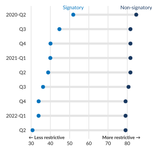

With the end of the global public health emergency, this data story takes a look back at how the world’s forcibly displaced were able to access protection during the crisis. We all remember the seemingly unprecedented restrictions on human mobility, with states closing their borders to travelers and
in some cases to refugees and asylum-seekers as well. But access to asylum is not just about the ability to reach and cross a border.
The pandemic also brought with it a wide array of restrictions that affected refugee and asylum-seekers’ ability to receive necessary food,
medical assistance and shelter on arrival, apply for refugee status, and get the necessary legal documentation to reside in a host country.
In the immediate aftermath of the pandemic declaration, the UN High Commissioner for Refugees declared that the pandemic did not provide an
exemption to states’ obligations to provide access to international protection, and that doing so would not interfere with protecting public health.
To keep track of these multifaceted ways in which the changing pandemic situation was affecting people's ability to access asylum, UNHCR launched the Global
Protection Platform in April 2020, tracking these issues through April 2022. Using this extensive data, Dr. Lama Mourad (Carleton University) and
Dr. Stephanie Schwartz (The London School of Economics & Political Science) developed the Covid Asylum Restrictiveness Index (CARI) to track the overall
impact of the wider set of measures related to asylum during the pandemic. For every month where data is available,
CARI scores for each country range from 0 (no restrictions) to 100 (most restrictive). This index allows for analysis both across countries and over time.
Below we discuss three major takeaways of this research, and some of their implications for the long-term impact of the crisis on asylum globally.
Covid Asylum Restrictiveness Index (CARI) as of May 2020
Access to asylum did not open when ‘borders’ opened
In the immediate aftermath of the declaration of the public health emergency in March 2020, the majority of countries in the world moved towards restricting
border crossings and halting travel to try and stem the spread of the virus. Alongside restrictions on travel for
leisure or business, many states also applied these measures to asylum-seekers. This occurred despite the fact that under international law, individuals have
the right to seek asylum and states are prohibited from sending people who are entitled to international protection back to places where their lives or
liberty are in danger, a core principle of international refugee protection known as non-refoulement. As the urgency of the pandemic abated in 2021 states began
reopening their borders, but the Global Protection Platform and CARI data show that other restrictive policies that severely restricted access to asylum and
hindered the protection available for refugees and asylum-seekers persisted long after. Among these measures are procedural hindrances to filing asylum claims,
as well as access to adequate reception facilities. As we see below, as more and more countries loosened restrictions related to the border (‘Access to Territory”),
their overall asylum restrictiveness as measured by the CARI index remained, on average, fairly consistent.
This indicates that even as states were opening their borders, they maintained or, in some cases, adopted more restrictive measures–such
as shutting down asylum processing, closing reception facilities, or limiting access to asylum documentation—that are fundamental to the protection
of millions of forcibly displaced persons worldwide.
Number of countries with open borders and their average CARI scores
Core Refugee Institutions Matter
The UN Refugee Agency’s mandate to protect and safeguard the rights of refugees is guided by the 1951 Refugee Convention and its 1967 Protocol.
The core precept enshrined in these documents is non-refoulement, or the prohibition against states returning refugees to places where their lives or
liberty are in danger. While all states must uphold the principle of non-refoulement, as a bedrock of asylum norms globally,
states party to the 1951 Refugee Convention or its Protocol have a duty to uphold a greater set of rights as well.
During the pandemic we find that states party to the Convention had, on average, much less restrictive policies than those who are not.
This is particularly notable given that at the outset of the pandemic, as states worldwide adopted restrictive measures towards asylum, many scholars
and international organizations were concerned that such behavior could erode the strength of the international refugee protection regime established
through the 1951 Refugee Convention.
Comparing average CARI scores for signatory and non-signatory countries

Asylum Trajectories Matter
In understanding the impact of restrictions on seeking asylum during the COVID-19 pandemic, it is important to bear in mind the trajectories that the
majority of asylum-seekers take in their attempt to seek a safe refuge. While comprehensive statistics are not available, of more than 40,000 people
interviewed in Europe, Africa and the Middle East, 24% report transiting three or more countries between their starting point and their intended destination.
Therefore, while the policies of destination countries are undoubtedly significant, they need to be placed in the context of the policies adopted by transit
countries along the route. These policies, together, ultimately shape the displacement trajectory of asylum-seekers and their ability to access international
protection.
While destination countries, many of which are Western industrialized countries that are Convention states, on average, had lower levels of restrictiveness
towards asylum-seekers, their restrictions tended to be maintained over a longer period of time. As most states temporarily imposed strong restrictions early
on in the pandemic, when fears of the risk of border crossing to public health were high, source and transit countries showed greater propensity towards
loosening restrictions over time alongside the broadening opening of borders. However, as destination countries maintained restrictions in place, transit
countries increasingly became holding places for asylum-seekers in these regions.
The data show how this played out, for example, in both the Americas and the Mediterranean region, where migrants and refugees often pass through
several transit countries in the hope of reaching their final destination.
In the Americas, most asylum-seekers are trying to reach North America, and the United States in particular.
Central and South America, the source and transit countries for the majority of asylum-seekers in the region during this period, had higher levels of restrictiveness towards refugee and asylum-seekers early on in the pandemic. However, both subregions began to loosen their restrictions within a few months.
In the case of Central America, restrictions fall well below those imposed in North America within the first month of the declaration of the global health emergency.
We see a similar pattern in and around the Mediterranean region. In this case, where source countries are more varied, we focus on Western and Eastern Africa alongside the Middle East, as source subregions, and North Africa as a major transit point. As with the case of the Americas, the source and transit subregions displayed greater restrictiveness early in the pandemic but moved towards loosening their restrictions fairly quickly.
Southern and Western Europe, while adopting fewer restrictions on average, were more likely to maintain those that they did institute. Ultimately, as the desired final destinations of most asylum-seekers undertaking these trajectories, the maintenance of restrictions on asylum-seeking resulted in large numbers of refugees and asylum-seekers remaining trapped in transit countries where access to protection may be significantly limited, either due to capacity or legal rights.
Asylum Post-Pandemic
The evidence shows that the COVID-19 pandemic seriously disrupted people’s ability to access asylum - but not just in the ways most anticipated. In addition to border restrictions,
now largely lifted, asylum-seekers also faced significant barriers to accessing protection that were both less immediately visible and more persistent.
Looking at the policies of individual states, we see that despite a wide range of responses to the public health crisis in the early stages, states party to the
1951 Refugee Convention or its Protocol had fewer restrictions on asylum throughout the pandemic. Regional patterns suggest that protecting access to asylum
requires looking beyond the actions and policies of individual states in isolation. Looking at the interaction of state policies along displacement routes provides
key insight into where and why refugees are unable to access the protection they are entitled to. This can inform the design of ‘whole-of-route’
interventions that seek to alleviate human suffering during displacement while also maintaining the fundamental principle of access to asylum and reaffirming
all states’ asylum obligations.
UNHCR continues to closely track and analyze countries' legislation related to seeking asylum and other issues of concern for refugees. UNHCR's Rights Mapping and Analysis Platform (RiMAP) is designed to provide information about domestic laws and policies regulating access to rights for forcibly displaced and stateless persons. RiMAP provides an online platform and a methodology for collecting and analysing legal data around specific rights categories.
Data Source:The Covid Asylum Restrictiveness Index (CARI) (2023), developed by Dr Lama Mourad (Carleton University) and Dr Stephanie Schwartz (the London School of Economics and Political Science), with Dr. Sarah Cueva-Egan (University of Southern California).